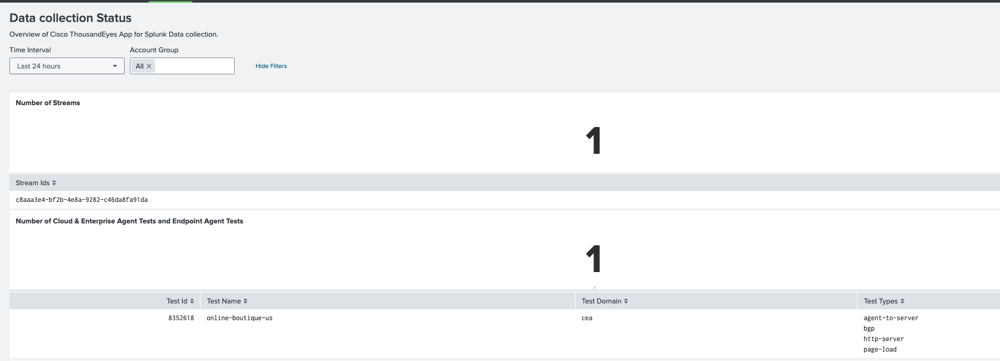

3. Validation
Once installation and configuration are complete, verify that ThousandEyes data is flowing into Splunk.
Option A — Use the Built-in Dashboard
- Go to Apps → Cisco ThousandEyes App for Splunk
- Navigate to Dashboards → Data Collection Status

A healthy integration will show recent events grouped by test name and type.
Option B — Run a Search Query
Run the following SPL query in Splunk Search to confirm events are being indexed:
index=te_index
| stats count by test_name, test_type
| sort -count
Expected output: A table listing your ThousandEyes test names and types, with a count of events per test. If the table is empty or returns no results, revisit the Configuration steps.
Troubleshooting
| Symptom | Likely Cause | Resolution |
|---|---|---|
No data in te_index |
HEC token not set to correct index | Re-check Token Creation |
| Authorization fails | Self-signed certificate on HEC | Replace with a valid TLS certificate |
| Inputs show as Inactive | ThousandEyes API connectivity issue | Verify API credentials and network access |
| Macro searches return wrong data | Macros still using index=* |
Revisit Updating Macros |
✅ If the dashboard shows data and the SPL query returns results, your ThousandEyes integration is fully operational and ready for use with ITSI.